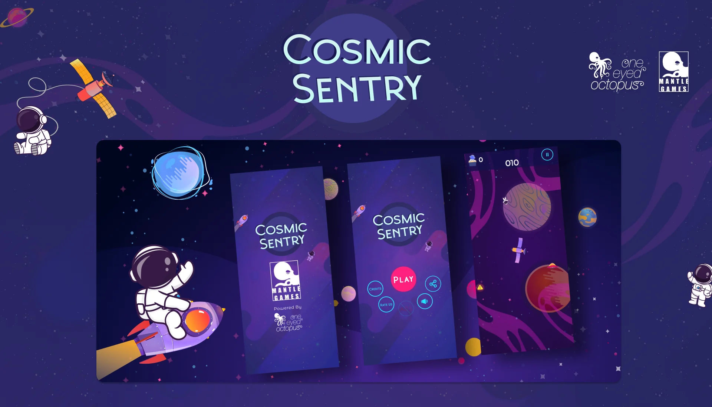
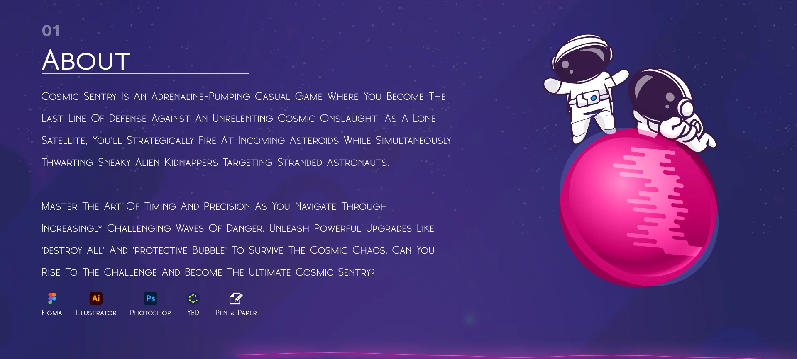
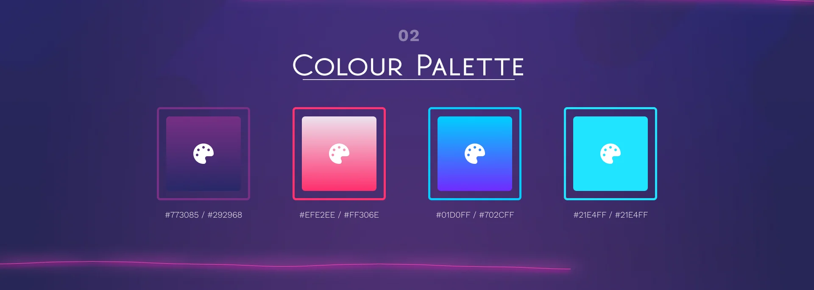
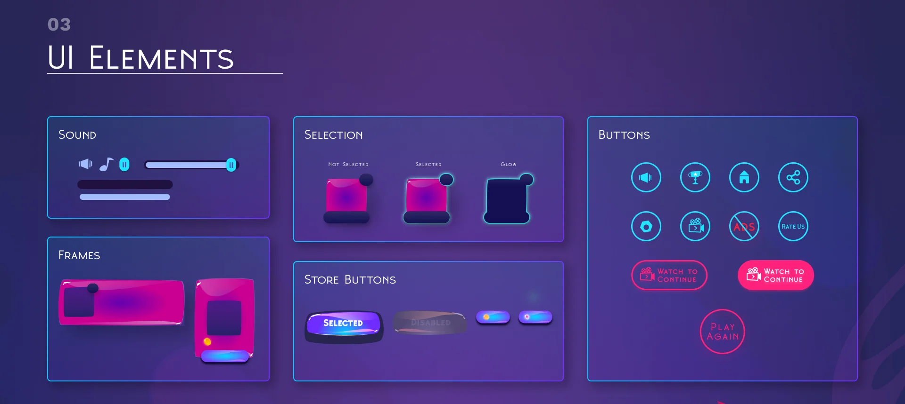
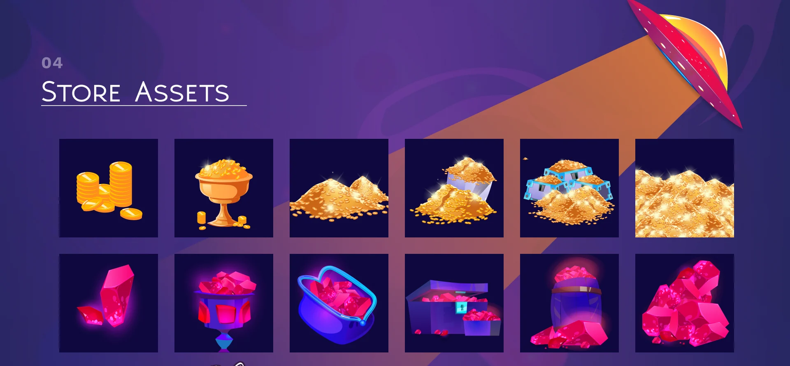
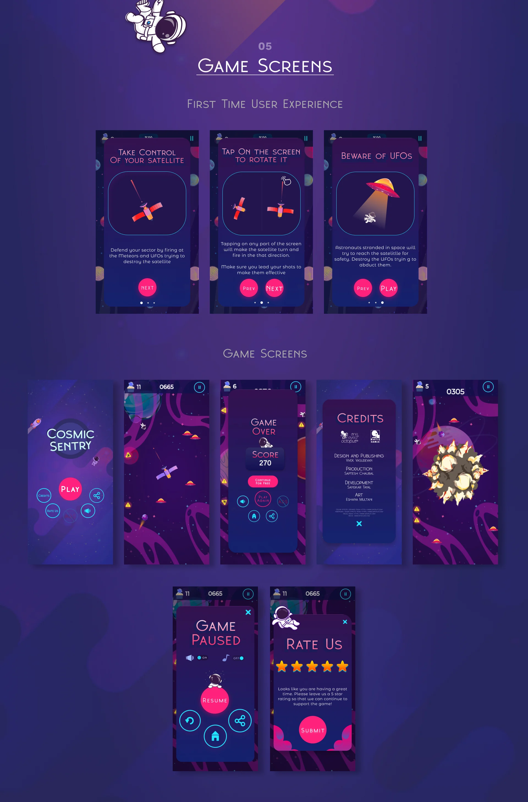

Cosmic Sentry, hyper-casual space shooter game UI

01 · About
Cosmic Sentry is an adrenaline-pumping casual game where you become the last line of defense against an unrelenting cosmic onslaught. As a lone satellite, you'll strategically fire at incoming asteroids while simultaneously thwarting sneaky alien kidnappers targeting stranded astronauts. Master the art of timing and precision as you navigate through increasingly challenging waves of danger. Unleash powerful upgrades like 'Destroy All' and 'Protective Bubble' to survive the cosmic chaos. Can you rise to the challenge and become the ultimate Cosmic Sentry? Tools: Figma, Illustrator, Photoshop, yEd, Pen & Paper.

02 · Colour Palette
Palette: #773085 / #292968, #EFE2EE / #FF306E, #01D0FF / #702CFF, #21E4FF / #21E4FF.

03 · UI Elements

04 · Store Assets

05 · Game Screens
